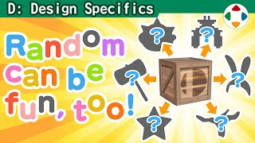
速览
随机——也就是乱数决定要素的机制，用得好能为游戏添彩。优点：游戏是让人重复玩同样内容的机制，随机能让人不易腻；用同样方式做的同一游戏，有时很难演出游玩的振幅，用随机让每次展开不同，就能保持新鲜、提高乐趣；对结果确定的内容改变概率，也能让应对方法更丰富。随机要素乍看会让人觉得失去策略性，但实际往往相反，它给予了「应对各种状况」的策略。当然随机也常让人觉得不讲理。缺点：首先不公平——不是同条件下的较量，结果好坏由运气左右，付出的努力也可能白费；玩家被打败的原因若是运气不好，很难接受，游戏需要一定程度「我是被打败的」的认同感。有的 RPG 把运气作为角色参数，历史相当久，至少 1981 年的《Wizardry》就有；这样稍微好接受，但不是优先参数，常被遗忘，也许大家不想把宝贵资源投在运气这种暧昧东西上。随机也不太适合想认真比拼的竞技——想让胜负只取决于双方实力时，随机要素会被敬而远之。《大乱斗》近年倾向从斗士身上排除随机：以前随机出现的桃花公主 Smash 攻击种类，现在可以用上下来打出区分。但勇者每次出现的指令是随机的，这被认为可以，因为能否用好就是实力。道具则浓厚地保留多样随机，搅乱局面，让各种人都有逆转可能；高手当然更会用道具，但比起纯实力比拼更好——毕竟本就是「哇哈哈」笑完就下一局的游戏。注意：电脑只能做决定好的事，严格来说无法生成随机；在重置后立刻执行等特定操作下可能必然出现特定值。为防止这种问题，生成时最好参考内置时钟等表示不确定值的东西。
1. 随机的优点 0:03
随机，也就是用乱数决定要素的机制，用得好能为游戏添彩。
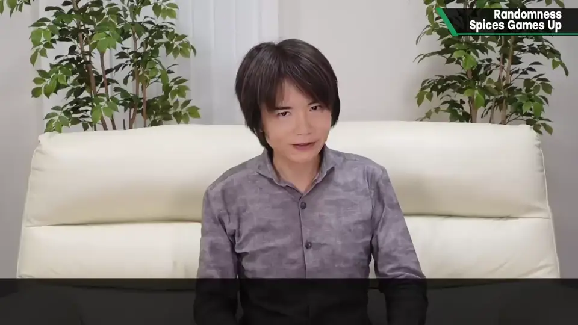
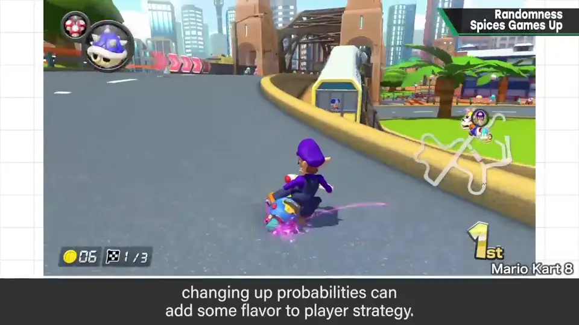
游戏是让人重复玩同样内容的机制，而随机能让人不容易腻。用同样方式做出来的同一款游戏，有时很难演出游玩的振幅；用随机让每次展开都不同，就能保持新鲜感、提升乐趣。
对结果确定的东西改变概率，也能让应对方法更加丰富。
2. 随机的缺点 1:00
当然，随机也常让人觉得不讲理。首先它不公平：不是同条件下的较量，结果好坏被运气左右，花的工夫也可能白费。
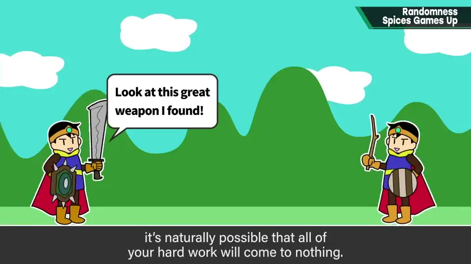
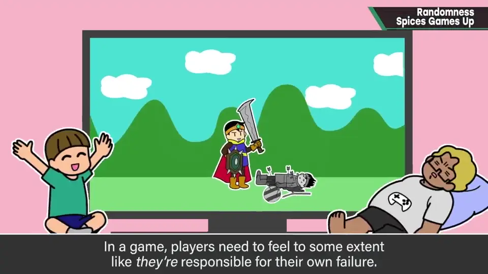
玩家被打败若只是因为运气不好，就很难接受。游戏需要一定程度「是我被打败了」的认同感。
3. 把运气做成参数 1:28
有些 RPG 把运气作为角色强度的参数。这历史相当久，至少 1981 年的《Wizardry》就已实装。
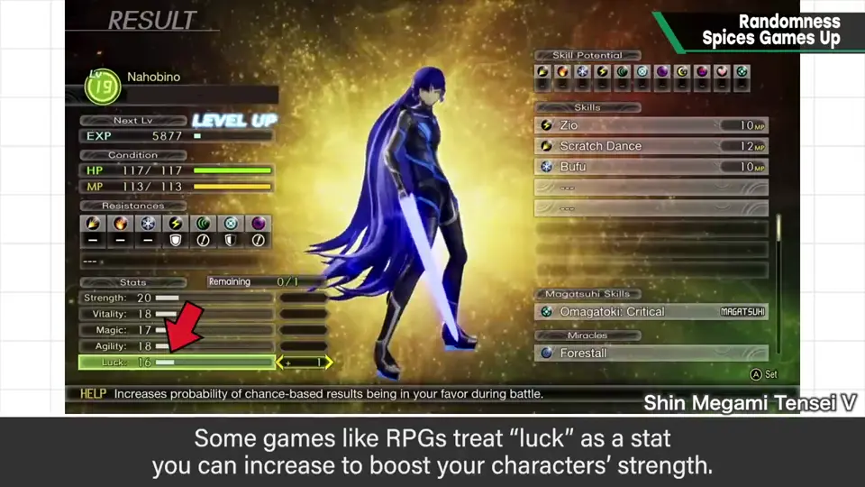
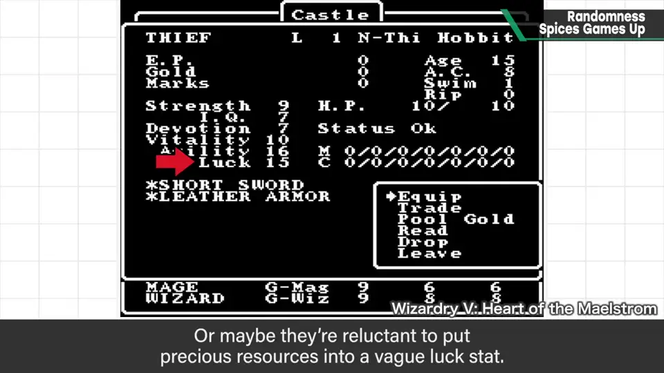
这样稍微容易接受，但它不是优先的参数，游戏中常被忘掉——也许大家不想把宝贵资源投到运气这种暧昧的东西上。
4. 竞技与《大乱斗》 1:56
随机性也不太适合想要认真比拼的竞技。想让胜负只取决于双方的实力时，随机要素往往会被敬而远之。
《大乱斗》近年倾向于从斗士身上排除随机要素：以前随机出现的桃花公主 Smash 攻击的种类，现在可以用上下来打出区分。
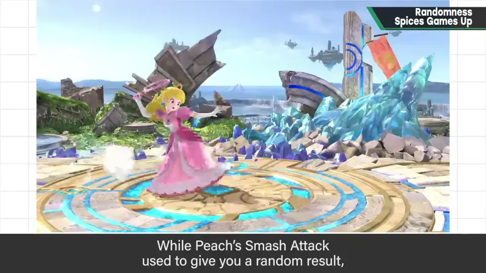
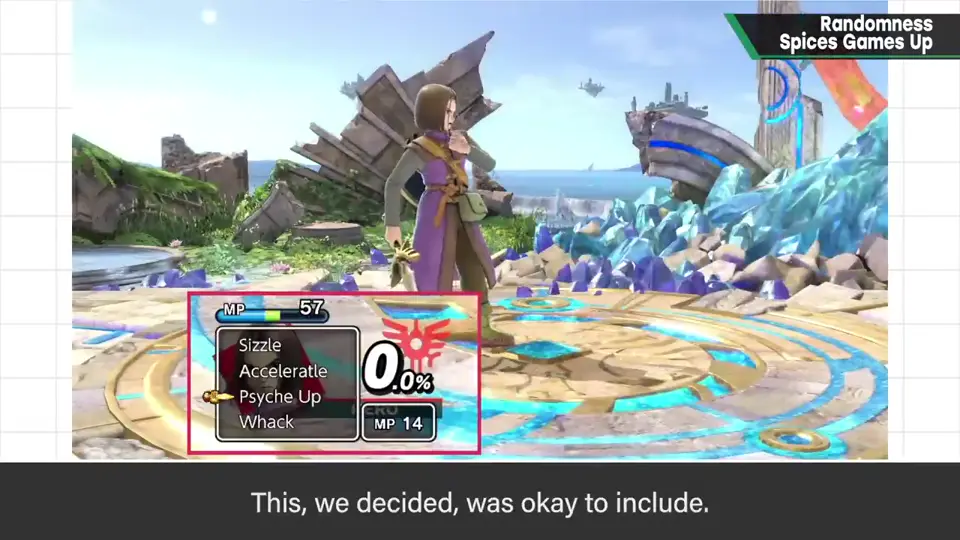
但勇者每次打开出现的指令是随机的，这被认为可以——出现的项目有随机性，但能否用好它，正是实力。
道具则浓厚地保留了多样的随机性：搅乱局面，给各种人留下逆转的可能。高手当然会比新手更会用道具，但这仍比只拼实力好——何况它本就是「哇哈哈」一笑然后下一局的游戏。
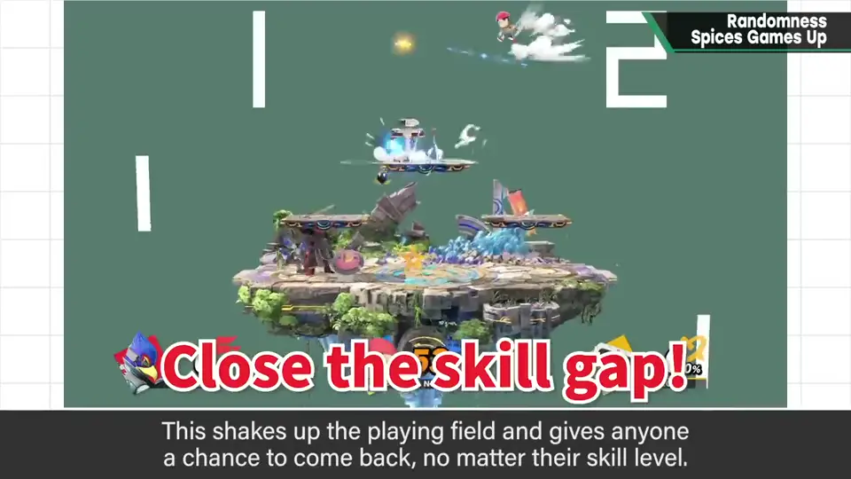
5. 注意：电脑无法真随机 3:18
电脑只能做决定好的事，所以严格来说无法生成随机。在重置后立刻运行等特定操作下，可能必然出现特定的值。
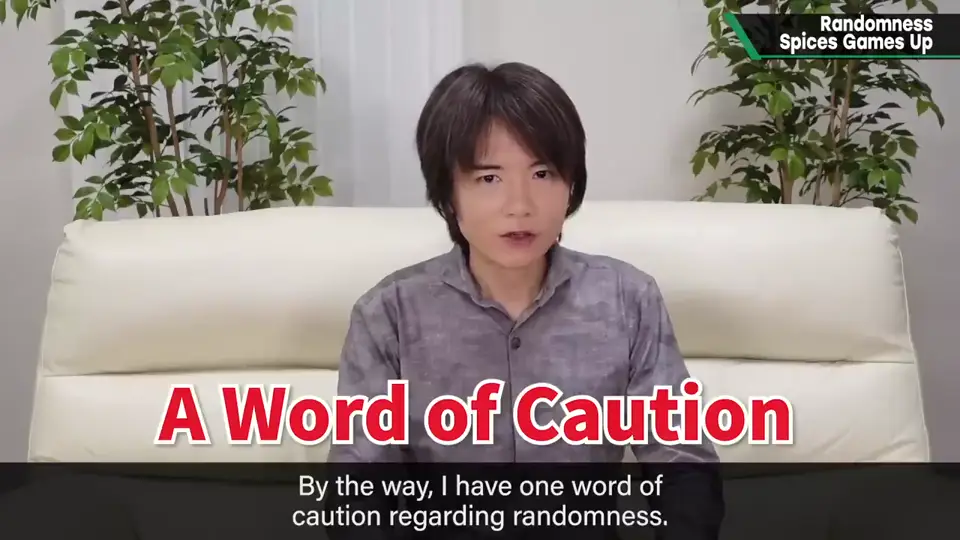
自测题
1. 为什么说随机反而能带来策略性？
它给玩家「应对各种状况」的策略，而不是一套固定解法。 0:44
2. 随机的主要缺点是什么？
不公平：运气左右结果，因运气差而输很难让玩家接受。 1:00
3. 《大乱斗》中勇者的随机指令为何被保留？
项目随机出现，但能否用好它就是实力。 2:30
4. 电脑生成随机时要注意什么？
严格来说不能真随机，特定操作可能必出特定值；应参考内置时钟等不确定值。 3:18